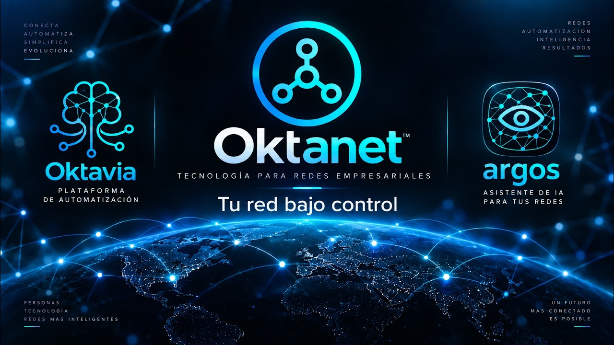

Equipo de Oktanet
Equipo de Oktanet
Inteligencia artificial
IA local con el contexto de su empresa: Argos responde sin que su información salga
Un asistente de inteligencia artificial sólo sirve en operación de redes si conoce la red que opera y si usarlo no expone lo que sabe de ella. Este artículo explica cómo Argos, el asistente de Oktavia, responde con un modelo que corre en su propio servidor, a partir de las guías de los fabricantes y de los documentos de su empresa, citando de dónde sale cada respuesta.
Un asistente genérico no conoce su red
Pregúntele a un asistente de uso general cómo restringir SSH en un router y le dará una respuesta correcta en abstracto: la de un manual promedio, para una versión cualquiera, sin saber qué lista de acceso usa su organización para la gestión, desde qué redes se administra ni qué dice su procedimiento de cambios. La respuesta suena bien y no se puede aplicar tal cual.
La salida obvia es darle contexto: pegarle la configuración, el diseño, el inventario. Ahí aparece el segundo problema. Una configuración completa lleva comunidades SNMP, llaves de túneles, usuarios y la topología entera de la red. Enviarla a un modelo en la nube significa que esa información sale de su organización, queda sujeta a las políticas de retención de un tercero y, en muchos sectores, choca de frente con la política de seguridad o con el regulador.
O el asistente no sabe nada de su red, o sabe demasiado y vive fuera de ella. Ninguna de las dos sirve.
Qué hace Oktavia: un agente de IA que corre en su servidor
Oktavia incluye un agente de IA local: un modelo de lenguaje abierto que corre en el mismo servidor de Oktavia que usted instala, junto con un índice de su documentación. Cuando alguien hace una pregunta, Argos busca en ese índice los fragmentos que tratan del tema, se los entrega al modelo y le pide que responda sólo con eso. La técnica se conoce como generación aumentada por recuperación (RAG, por sus siglas en inglés): el modelo no tiene que «saber» su red, la consulta cada vez.
- Nada sale del servidor. Los documentos, el índice, la pregunta y la respuesta se quedan en su infraestructura.
- Sin costo por pregunta. No hay tokens que pagar a un proveedor por cada consulta; el costo es el del servidor que ya opera.
- No entrena con sus datos. El modelo no se reentrena con su información. Los documentos se consultan, no se memorizan, y retirarlos del índice basta para que dejen de usarse.
Qué lee: el contexto de su empresa
Un modelo local es tan bueno como lo que tiene para consultar. El valor está en el corpus, y por eso Oktavia arma buena parte de él por usted. Cada respuesta cita el documento y la página de donde salió.
- Las guías oficiales de los fabricantes de las plataformas que hay en su inventario: la guía de hardening de Cisco IOS XE, las de FortiOS, Junos y Meraki, y guías generales como la de seguridad de infraestructura de red de la NSA. Se descargan solas cuando el fabricante lo permite; si no, se suben en PDF, HTML o Markdown.
- El reporte técnico de su red, por sitio, que Oktavia genera a partir de la topología real descubierta: equipos, enlaces, vecinos de ruteo, servicios. Es el documento de diseño que casi nadie mantiene al día, y aquí sale de la red, no de la memoria de alguien.
- Su estándar de configuración: la intención declarada en el Configurador y lo que audita cada regla de cumplimiento. Lo genera Oktavia, con los secretos enmascarados.
- Los documentos de su equipo, a partir de un kit de documentación con plantillas: estándar de diseño (HLD), runbooks de diagnóstico, procedimiento de cambios, política de seguridad, y circuitos y proveedores. Al subir un documento se valida que tenga sus secciones obligatorias, y cada plantilla trae un ejemplo lleno.
- Cada reporte de cambio de ciclo cerrado: lo que se pidió, lo que se aplicó y el antes y el después. Así Argos aprende de los cambios anteriores de su propia red, no de la de otros.
Dónde se usa
El agente local no es una ventana de chat aparte. Aparece donde el operador ya está trabajando:
- Diagnóstico por incidente. En cada incidente que Argos arma, la sección «Qué dice la documentación» resume qué revisar, en qué orden y con qué comandos de verificación, según sus runbooks y las guías del fabricante de ese equipo.
- Remediación de CVE. Argos lee el aviso de seguridad del fabricante y sólo acepta comandos que aparecen textualmente en él. Con eso prepara los cambios urgentes como borrador en el Gemelo Digital o los propone al estándar del Configurador, para que los equipos nuevos ya nazcan corregidos.
- Preguntas sobre su red. «Según la documentación, ¿cómo restrinjo SSH en este equipo?» se responde con la guía del fabricante para esa plataforma, la lista de acceso de gestión de su estándar y la cita de cada parte.
Las barandillas
Un modelo de lenguaje puede inventar con mucha seguridad. En operación de redes eso no es un detalle de estilo: un comando inventado es una salida a sitio. Por eso el agente trabaja con reglas que no dependen de que el modelo se porte bien:
- Responde sólo con lo recuperado. Si los fragmentos no cubren la pregunta, lo dice, y cada afirmación lleva su cita.
- Comandos sólo textuales. Un comando se acepta únicamente si aparece tal cual en una fuente citada. Lo que el modelo «complete» por su cuenta se descarta.
- Los secretos nunca se indexan. Las líneas con comunidades, llaves o contraseñas se eliminan antes de entrar al índice. Lo que no está en el índice no puede aparecer en una respuesta.
- Alcance por equipo y por sitio. La búsqueda se acota al equipo o sitio en cuestión y a su organización; la respuesta no mezcla la red de un cliente con la de otro.
- Los cambios siguen pasando por el ciclo. Nada se aplica desde una respuesta. Todo cambio va al Gemelo Digital, una persona aprueba el diferencial exacto y el ciclo cerrado verifica el antes y el después.
La IA propone y cita. Las personas aprueban. La red confirma.
Buenas prácticas
- Cure el corpus. Guías oficiales y en su versión vigente. Un documento viejo responde con la sintaxis vieja.
- Prefiera PDF con texto. Un PDF escaneado es una imagen y necesita reconocimiento de caracteres antes de servir.
- Llene las secciones obligatorias del kit. Están ahí porque son las que el diagnóstico consulta.
- Nombre los runbooks como el síntoma. «Túnel caído entre sitios» se encuentra; «Procedimiento 14» no.
- Regenere la parte de Oktavia tras un cambio grande. Un sitio nuevo o una migración cambian el reporte técnico y el estándar.
- Dimensione el servidor. En CPU una respuesta tarda alrededor de un minuto; con una GPU, segundos.
- Escale a un modelo en la nube sólo de forma explícita. Si alguna vez lo necesita, que sea a petición de una persona y con un resumen acotado del equipo o del sitio, nunca con configuraciones completas.
Del incidente a la resolución
El agente local es una pieza del mismo recorrido que describimos en el artículo sobre cerrar el ciclo: detectar, proponer, aprobar, aplicar y verificar. Y sigue los mismos principios de seguridad en Oktavia y Argos: ningún secreto a la IA y una herramienta que no agrega superficie de ataque.

De la incidencia a la resolución en minutos: troubleshooting de BGP y GRE con Argos.
¿Qué le respondería hoy un asistente sobre su propia red?
Si la respuesta es «nada que pueda aplicar» o «no lo dejamos ver la configuración», vale la pena verlo con su documentación. Para cotizar sólo necesitamos saber aproximadamente cuántos equipos administra.